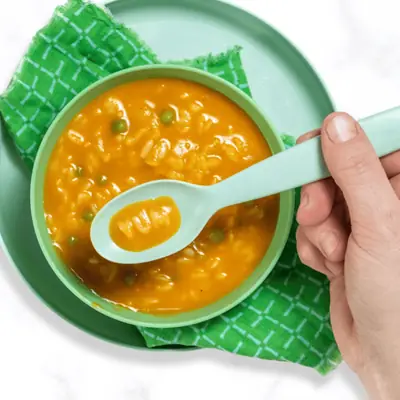

25-Minute Alphabet Soup with Hidden Veggies

Ingredients
- 1 tbsp olive oil
- 1/2 white onion, (diced)
- 2 cloves garlic, (minced)
- 2 medium carrots, (diced)
- 2 sticks celery, (diced)
- 1/2 tsp Italian Seasoning or dried Oregano
- 1 - 14oz can diced tomatoes
- 6 cups chicken or veggie broth
- 1 cup alphabet pasta
- 1 cup frozen peas, (optional)
- salt and pepper, (to taste)
Steps
- Sauté: In a large stockpot, heat the olive oil over medium-low. Add in the onions and sauté for 2-3 minutes. Add in the garlic, and sauté for 1-2 minutes. Add in the carrots, celery, Italian seasoning, salt, and pepper, and sauté for another 3-4 minutes, or until tender.
- Add Ingredients: Add the broth and diced tomatoes, and it bring to a boil over high heat.
- Puree: Meanwhile, while the soup is coming to a boil, use an immersion blender and puree until smooth. You can also transfer the ingredients to a blender and puree. For a chunky soup - omit this step.
- Pasta: Once the soup is at a boil, reduce heat to a simmer and add in the pasta. Simmer for 8 minutes.
- Add-Ins: Add in the frozen peas (if using) and simmer for another 2-3 minutes. Simmer until ready to serve. If the soup gets too thick, add in a little additional broth.
- Serve: let cool slightly if serving to kids. Enjoy!
Recipe by Baby Foode, from Baby Foode. Saved here for personal use; the original has the full notes, tips and photos. Open original